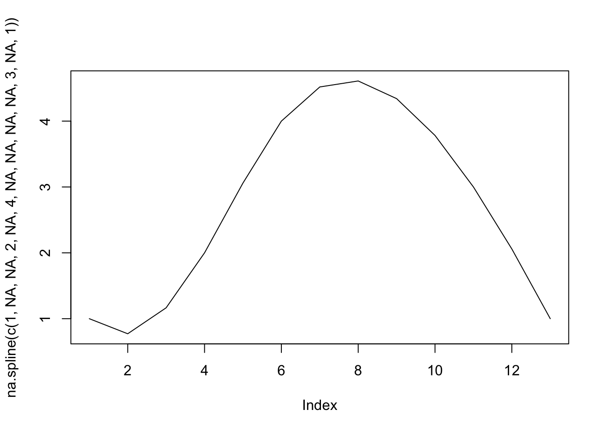
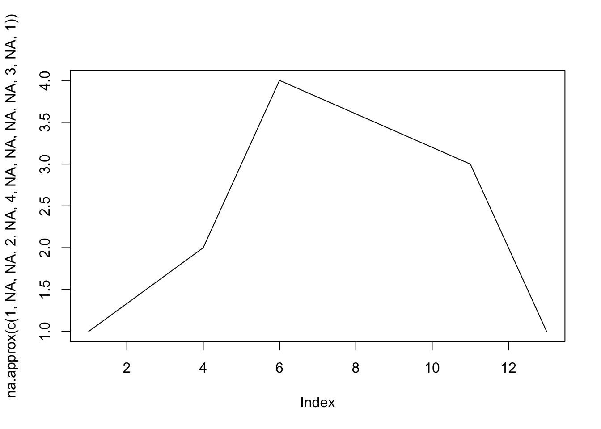

POL S/CS&SS 501, University of Washington, Winter 2016
$$ \DeclareMathOperator{\mean}{mean} \DeclareMathOperator{\var}{var} \DeclareMathOperator{\E}{E} \DeclareMathOperator{\argmin}{argmin} \DeclareMathOperator{\argmax}{argmax} $$Missing Values in R
Jeffrey Arnold
2016-01-21
In almost any set of real data, there will be missing values. All statistical software systems have some way of indicating missing values within variables. R uses the symbol NA to indicate a missing value.
Behavior of NA
Create two vectors that include missing values,
foo <- c(1, NA, 3)
bar <- c(4, 5, NA)Challenge
Try the following commands:. How do the NA affect the results?
foo + bar
foo - bar
foo * bar
foo / bar
foo == 1
foo > 1
sum(foo)
max(foo)For the arithmetic operators, +-*/, any element with an NA produces an NA in the output. For the logical operators, comparing an element with NA also produces an NA (not FALSE as might be expected). For sum and mean, any NA in the vector produces NA for a result.
foo + bar## [1] 5 NA NAfoo - bar## [1] -3 NA NAfoo * bar## [1] 4 NA NAfoo / bar## [1] 0.25 NA NAfoo == 1## [1] TRUE NA FALSEfoo > 1## [1] FALSE NA TRUEsum(foo)## [1] NAmax(foo)## [1] NATesting for NA with is.na
Since comparing any value to NA produces an NA, you can’t easily use == to test whether an element of a vector is equal to NA. Why not?
The function is.na is used to test whether an element of a vector is equal to NA.
is.na(foo)## [1] FALSE TRUE FALSEis.na(bar)## [1] FALSE FALSE TRUEThus, to test whether an element of a vector is not equal to NA,
!is.na(foo)## [1] TRUE FALSE TRUE!is.na(bar)## [1] TRUE TRUE FALSEChallenge
Using is.na and [ drop all missing values from foo.
foo[!is.na(foo)]## [1] 1 3To check whether there are any missing values in a vector,
any(is.na(foo))## [1] TRUETo check whether all values in a vector are missing,
all(is.na(foo))## [1] FALSETo count the number of missing values in a vector,
sum(is.na(foo))## [1] 1or calculate the fraction of missing values,
sum(is.na(foo)) / length(foo)## [1] 0.3333333Replace missing values
There are several ways to replace missing values in a vector,
alpha <- c(1, 2, NA)
alpha[is.na(alpha)] <- 0
alpha## [1] 1 2 0or
beta <- c(1, 2, NA)
beta <- ifelse(is.na(beta), 0, beta)Set values to missing
Sometimes you need to set common
A common convention in old datasets and survey data is to indicate missing values using unusually large or small values. For example, -66, -77, -88, or -99 in a 0-10 scale. How would you replace them with missing values?
Consider the following vector.
Q1 <- c(3, -88, 8, 2, 6, 7, 1, 5, 1, 9, -99)Suppose, it represents the response to a question on a 0-10 scale, -88 is “Don’t know”, and -99 is “Refused to answer”. For your analysis, it makes sense to to “Don’t know” and “Refused to answer”" with missing values.
There are a few ways to do this: using [, using is.na, and using ifelse.
Q1_clean1 <- ifelse(Q1 %in% c(-88, -99), NA, Q1)
Q1_clean1## [1] 3 NA 8 2 6 7 1 5 1 9 NAQ1_clean2 <- Q1
Q1_clean2[Q1_clean2 %in% c(-88, -99)] <- NA
Q1_clean2## [1] 3 NA 8 2 6 7 1 5 1 9 NAQ1_clean3 <- Q1
is.na(Q1_clean3) <- Q1_clean3 %in% c(-88, -99)
Q1_clean3## [1] 3 NA 8 2 6 7 1 5 1 9 NAMissing values in character vectors
NA values can also occur in character vectors,
baz <- c("A", "B", NA, "")In a character vector, NA is not the same as “”.
Challenge
Start with the vector of capital Latin letters.
letr <- LETTERSNote that the variables letters and LETTERS have the 26 Latin alphabet letters in lowercase and uppercase, respectively.
Randomly set 3 elements to NA, and 3 elements to “”
letr[sample(1:length(letr), 6)] <- c(rep(NA, 3), rep("", 3))Without explicitly referencing the indexes of the elements
- create a new vector named
letrwith allNAvalues to “”. - create a new vector with all “” equal to
NA - Remove all elements that are either “” or
NA
To replace NA with “”,
letr1 <- letr
letr1[is.na(letr1)] <- ""
letr1## [1] "A" "B" "C" "D" "" "F" "G" "H" "I" "J" "K" "L" "" "N" "" "" "Q"
## [18] "R" "S" "" "U" "V" "W" "X" "" "Z"or using ifelse,
letr2 <- ifelse(is.na(letr), "", letr)
letr2## [1] "A" "B" "C" "D" "" "F" "G" "H" "I" "J" "K" "L" "" "N" "" "" "Q"
## [18] "R" "S" "" "U" "V" "W" "X" "" "Z"or using is.na,
letr2 <- letr
is.na(letr2) <- letr2 == ""To replace “” with NA,
letr2 <- ifelse(letr == "", NA, letr)
letr2## [1] "A" "B" "C" "D" NA "F" "G" "H" "I" "J" "K" "L" NA "N" NA NA "Q"
## [18] "R" "S" NA "U" "V" "W" "X" NA "Z"To drop all observations with NA or “”,
letr3 <- letr[! letr %in% c(NA, "")]
letr3Reading text files (csv)
The function read_csv has an argument na.strings which determines what cell values are converted to NA. By default it only reads cells with “NA” as missing values. However, often you will want to treat any blank cells, e.g. "" as missing. To do that,
read.csv(file, na.strings = "")Other functions
tidyr has a function replace_na which fills in missing values in multiple columns of a data frame,
library("tidyr")
library("dplyr")##
## Attaching package: 'dplyr'## The following objects are masked from 'package:stats':
##
## filter, lag## The following objects are masked from 'package:base':
##
## intersect, setdiff, setequal, uniondata_frame(x = c(1, 2, NA), y = c("a", NA, "b")) %>%
replace_na(list(x = 0, y = "unknown"))## Source: local data frame [3 x 2]
##
## x y
## (dbl) (chr)
## 1 1 a
## 2 2 unknown
## 3 0 bstringr has a function str_replace_na to replace NA values in a character vector,
library("stringr")
str_replace_na(c("a", "b", NA), "")## [1] "a" "b" ""Listwise deletion of rows with missing values in data frames
To drop any row in a data frame with any missing values use na.omit,
na.omit(data.frame(a = c(NA, 1, 2, 3), b = c("a", "b", NA, "d")))## a b
## 2 1 b
## 4 3 dImputing or filling missing values
The package zoo contains several functions to fill in missing values in time series data. na.locf fills in missing values with the last non-missing value,
library("zoo")##
## Attaching package: 'zoo'## The following objects are masked from 'package:base':
##
## as.Date, as.Date.numericna.locf(c(1, NA, NA, 2, NA, NA, NA, 3, 4, 5))## [1] 1 1 1 2 2 2 2 3 4 5na.approx fills in missing values with a linear interpolation, while na.spline fills in missing observations with a spline (smooth) interpolation,
plot(na.spline(c(1, NA, NA, 2, NA, 4, NA, NA, NA, NA, 3, NA, 1)), type = "l")
plot(na.approx(c(1, NA, NA, 2, NA, 4, NA, NA, NA, NA, 3, NA, 1)), type = "l")
See packages:

This work is licensed under a Creative Commons Attribution-NonCommercial-ShareAlike 4.0 International License. R code is licensed under a BSD 2-clause license.